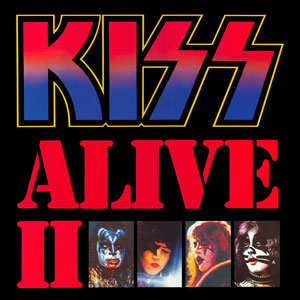
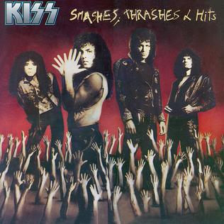
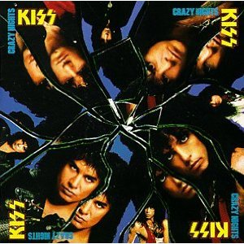
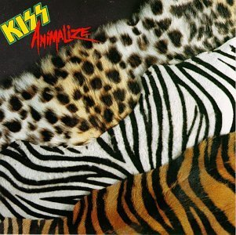
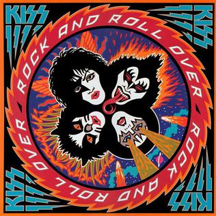
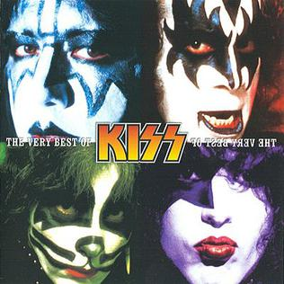
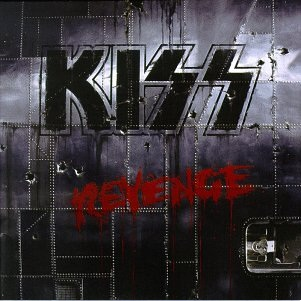
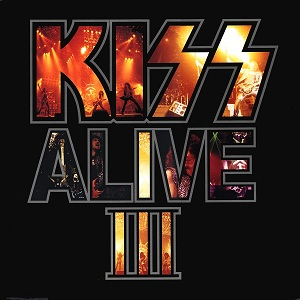

Members:
- Paul Stanley
- Gene Simmons
- Ace Frehley
- Peter Criss
Kiss (often styled as KISS) was an American rock band formed in New York City in 1973 by Paul Stanley (vocals, rhythm guitar), Gene Simmons (vocals, bass guitar), Ace Frehley (lead guitar, vocals), and Peter Criss (drums, vocals). Known for their face paint and stage outfits, the group rose to prominence in the mid-1970s with shock rock-style live performances which featured fire-breathing, blood-spitting, smoking guitars, shooting rockets, levitating drum kits, and pyrotechnics. The band had gone through several lineup changes, with Stanley and Simmons remaining the only consistent members. The final lineup consisted of them, Tommy Thayer (lead guitar, vocals), and Eric Singer (drums, vocals). KISS have released 20 studio albums (24 counting the unified 1978 solo albums), 13 live albums, and 60 singles and have sold over 100,000,000 records (albums and singles) worldwide. The best-selling album by KISS is ALIVE!, which sold over 9,000,000 copies.
| Album name | ALIVE! (1975) | LOVE GUN (1977) | ALIVE II (1977) | DESTROYER (1976) | SMASHES, THRASHES AND HITS (1988) | DYNASTY (1979) | CRAZY NIGHTS (1987) | ANIMALIZE (1984) | ROCK AND ROLL OVER (1976) | THE VERY BEST OF KISS (2002) | REVENGE (1992) | ALIVE III (1993) |
|---|---|---|---|---|---|---|---|---|---|---|---|---|
| Sold copies | 9,000,000 | 4,000,000 | 2,167,550 | 2,165,000 | 2,112,490 | 1,365,140 | 1,172,446 | 1,139,970 | 1,099,420 | 591,863 | 582,800 | 568,820 |
| Album covers | |
|
 | |
 | |
 |  |  |  |  |  |